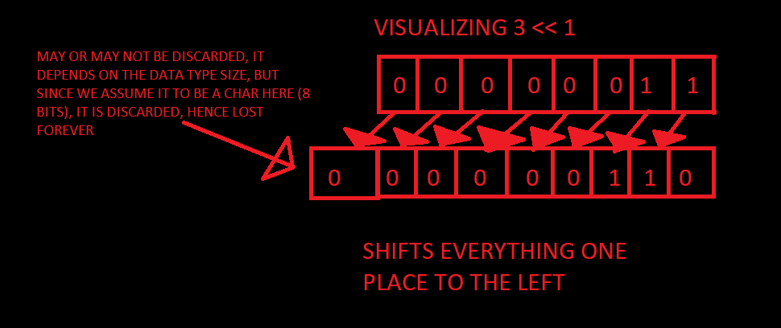

BIT MANIPULATION
a tutorial on bit twiddling and such
introduction to bitwise operators
bitwise operators perform operations on bits
C provides 6 bitwise operators for us to use
such bitwise operators work on integral types only, not floating points, try to avoid using them with signed numbers as they may yield unwanted results
(i.e since C99, left shift << operator on signed numbers have undefined behaviour or right shift >> operators have implementation defined behavour on signed numbers)
| BITWISE OPERATOR | what it does |
|---|---|
| ~ | Bitwise NOT.flips all bits in n, i.e - turns 0 bit to 1, and vice versa, syntax: ~n where n is a number |
| & | Bitwise AND. Ands each bit in n by each bit in z, syntax: n & z |
| | | Bitwise OR. ORs each bit in n by each bit in z, syntax: n | z |
| << | left shift operator, shifts all bits in n by z places to left, syntax: n << z |
| >> | right shift operator, shifts all bits in n by z places to right, syntax: n >> z |
| ^ | bitwise XOR. XORs each bit in n by each bit in z, syntax: n ^ z |
BITWISE NOT
A bitwise NOT inverts the bits of a number(i.e it flips 0 to 1 and 1 to 0), for example, take the number 2, which has a binary representation of 0000 0010 in 8 bits, a bitwise NOT would invert all of it to 1111 1101, which is -3 in two's complement, essentially it has the same effect as negating a number and then subtracting one from it, thus 2 becomes -2 -1 = -3.
------
OPTIONAL READING FOR ADVANCED READERS:
In an unsigned system, the MSB(most significant bit) does NOT represent the sign of a number so trying bitwise NOT on 2 in an unsigned system becomes 253(for 8 bits), since 1111 1101 in an unsigned system IS 253. (note: the result of bitwise not depends on the size of your data type for, we're considering everything as a char(1 byte/8 bits) here)
------
code example
#include <stdio.h>
int main()
{
printf("%d\n", ~4);
return 0;
}
output: -5
try these:
- predict value of ~9
bitwise AND
bitwise AND essentially checks if two bits are on(1) or not(0) for every bit, it outputs 1 ONLY if two bits are 1, or else it outputs 0, for example, lets take 1(binary representation: 0000 0001 in 8 bits) and lets take 2(binary representation: 0000 0010 in 8 bits), lets AND them together now: 1 & 2, the result would be 0, why you may ask? to answer that, lets work it through.
| "1" | 0 | 0 | 0 | 0 | 0 | 0 | 0 | 1 |
| "2" | 0 | 0 | 0 | 0 | 0 | 0 | 1 | 0 |
| AND | 0 | 0 | 0 | 0 | 0 | 0 | 0 | 0 |
See how no two bits were 1 at the same position/column? when two bits are not 1 at the same position, AND outputs a 0 for that position.
Now try bitwise AND on 3 and 10? what do you think the output will be? 3 & 10 = 2. How? let's work through it!
| "10" | 0 | 0 | 0 | 0 | 1 | 0 | 1 | 0 |
| "3" | 0 | 0 | 0 | 0 | 0 | 0 | 1 | 1 |
| AND | 0 | 0 | 0 | 0 | 0 | 0 | 1 | 0 |
look at the second bit(the second last column) and see how both of them have a 1 bit at that position? Bitwise AND returns 1 if both bits at the same position are 1 and as expected we got 1 as an output at that position, so the overall output of the bitwise AND operation is 0000 0010, which converted to decimal(the number system we use) is 2, hence the output of 3 & 10 is 2.
Now we're going to show a truth table here, what it does is show how an AND gate (or in our case, bitwise AND operator) behaves with inputs, which in our case are bits.
AND truth table
| BIT X | BIT Y | OUTPUT |
|---|---|---|
| 0 | 0 | 0 |
| 0 | 1 | 0 |
| 1 | 0 | 0 |
| 1 | 1 | 1 |
hopefully that clears up everything for you
code example
#include <stdio.h>
int main()
{
printf("%u\n", 4 & 5);
return 0;
}
OUTPUT: 4
try these:
- convert 5 and 3 to binary and then bitwise AND them together
- predict the output of 5 & 6
bitwise OR
Bitwise OR outputs 1 if any one of the bits in a given set of bits are 1, if both bits are 0, only then it would output zero. Try bitwise OR on 8 and 2, 8 | 2. The output would be 10. To better understand this, let's work this through.
| "8" | 0 | 0 | 0 | 0 | 1 | 0 | 0 | 0 |
| "2" | 0 | 0 | 0 | 0 | 0 | 0 | 1 | 0 |
| OR | 0 | 0 | 0 | 0 | 1 | 0 | 1 | 0 |
see how only one of the bits needed to be 1 for OR to output 1?
a truth table to explain it's behaviour
OR truth table
| BIT X | BIT Y | OUTPUT |
|---|---|---|
| 0 | 0 | 0 |
| 0 | 1 | 1 |
| 1 | 0 | 1 |
| 1 | 1 | 1 |
code example
#include <stdio.h>
int main()
{
printf("%u\n", 2 | 3);
return 0;
}
output: 3
try these:
- 10 | 3 = ??
- 20 | 4 = ??
LEFT SHIFT <<
shifts the bits of a number to the left by specified number of places, e.g - X << 3 shifts every bit in X to the left by three places; X << 1, shifts every bit in X by one place. Left shift has a side effect of doubling a number, 3 << 1 would be 6, similarly 3 << 2 would double the number twice, so 3*2*2 = 12, hence 3 << 2 = 12.
let us try visualizing it
similarly, 3 << 2 would shift it 2 places to the left instead of one place as shown in the image
code example
#include <stdio.h>
int main()
{
printf("%u\n", 4 << 1);
return 0;
}
output: 8
try these:
- 4 << 1 = ? (hint: shifting once has the effect of doubling once, shifing twice has the effect of doubling the number twice)
- 2 << 3 = ?
RIGHT SHIFT >>
Right shift is the polar opposite of left shift, instead of shifting to the left, it shifts to the right, it has the effect of halving the number instead, watch out for discarded bits tho, since like left shift, it also has a similar problem:
1 >> 1, doing which would result in 0 since 0000 0001 -> 0000 0000|1|<---this bit is shifted below the lowest bit position hence it is discarded.
code example
#include <stdio.h>
int main()
{
printf("%u\n", 8 >> 2);
return 0;
}
output: 2
try these:
- 8 >> 1 = ?
- 4 >> 2 = ?
Bitwise XOR ^
short for exclusive OR, essentially it only outputs 1 only if one of the two bits are 1, if both are 1 or 0, it outputs 0, in simple terms both bits have to have different values for it to output 1.
as an example lets try 2 ^ 3
| "2" | 0 | 0 | 0 | 0 | 0 | 0 | 1 | 0 |
| "3" | 0 | 0 | 0 | 0 | 0 | 0 | 1 | 1 |
| XOR | 0 | 0 | 0 | 0 | 0 | 0 | 0 | 1 |
and thus, 2^3 = 1, notice how it outputted 1 for only the first bit, where two bits were different?
XOR truth table
| BIT X | BIT Y | OUTPUT |
|---|---|---|
| 0 | 0 | 0 |
| 0 | 1 | 1 |
| 1 | 0 | 1 |
| 1 | 1 | 0 |
code example
#include <stdio.h>
int main()
{
printf("%u\n", 3 ^ 3);
return 0;
}
output: 0
try these:
- 4^2= ??
- 7^2= ??